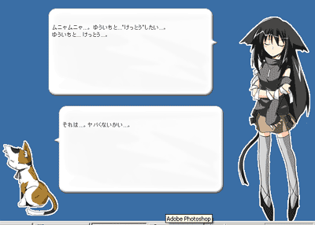

- Image Collector
-
画像収集、分類に便利なように、自分の指定した規則でファイル名を設定出来ます
- XULガカ
-

正直言って、「XULでこういうことは何処まで出来るのかな？」と技術実験で始めたネタ拡張です。実用性はありません。多分30秒で飽きます。
拡張というと、メニューとか右側のツリーに機能を継ぎ足すことがことさらに強調されますが、こういうのも良いんではないかと
ゴーストの作成と切り替えとかも技術的には可能ですので案外悪いアイデアではないのかと
- CiteMarker
-
サイトに得点を付けて、付けた点をリンクタグの色分け表示で示します
- CiteNavigator
-
head要素内のlink要素を読み込んで、参照文書にジャンプ出来るようにします、密かに便利